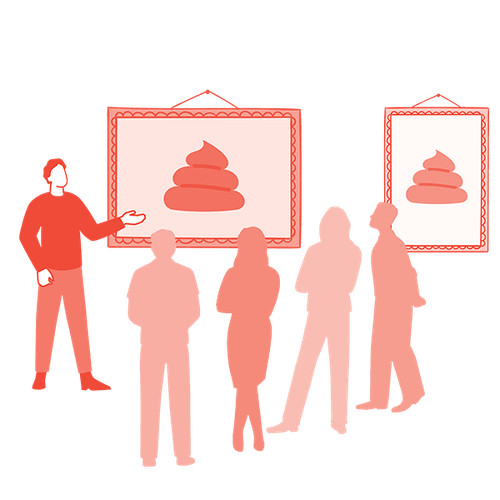

Mit der Academy erhaltet ihr im Business-Plan praxisnahe Lernmodule rund um Facilitation und wirksame Transformation.
Gemeinsam mit 9 Spaces zeigt Plan International Deutschland, wie wertebasiertes Arbeiten Orientierung gibt – nach innen wie nach außen.

Ein Tool, das dabei hilft, euch im Team verletzlich zu zeigen und miteinander zu verbinden
Ein Tool, das dir dabei hilft, dein Selbstmitgefühl zu stärken und konstruktiv mit Fehlern umzugehen.
Ein Tool, das dabei hilft, chronische Krankheiten bei der Arbeit zu thematisieren und Prozesse zu schaffen, um einen gesunden Umgang mit ihnen zu finden.
Dieses Tool gibt euch einen Rahmen zur Selbstreflexion über euer Leben und stärkt so die Verbindungen im Team.